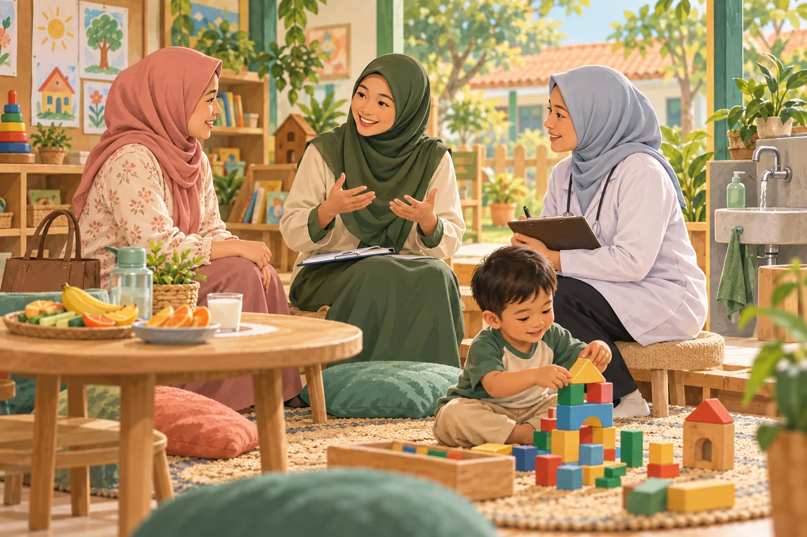
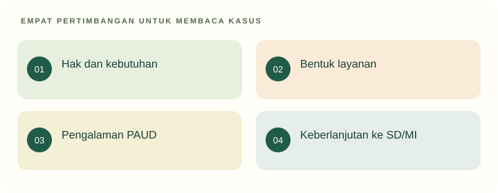

Tujuan pembelajaran
- Membedakan bentuk layanan PAUD dalam kerangka hukum Indonesia.
- Menjelaskan kebutuhan holistik dan hubungan PAUD dengan pendidikan selanjutnya.
- Menganalisis program melalui tujuan, proses, dan kebutuhan anak.
Apakah PAUD merupakan versi sekolah dasar yang dipercepat?

Dua lembaga menawarkan program berbeda. Lembaga A menonjolkan latihan akademik harian. Lembaga B menyediakan bermain, percakapan, perawatan diri, dan kegiatan agama, tetapi orang tua meminta penjelasan tentang arah belajarnya.
- Kebutuhan anak apa saja yang tampak?
- Bagian mana memerlukan koordinasi di luar peran guru?
Temukan persoalan konseptual
Sebelum membaca penjelasan, pisahkan kejadian yang dinyatakan dalam kasus dari dugaan Anda. Gunakan pertanyaan berikut untuk menyiapkan analisis.
- Apa tujuan pendidikan yang sedang dipertaruhkan?
- Pengalaman apa yang dialami anak, dan informasi apa yang belum tersedia?
- Konsep atau jenis sumber apa yang diperlukan untuk menilai tindakan pendidik?
Kebutuhan anak

PAUD holistik-integratif menghubungkan kebutuhan esensial anak dan layanan yang saling melengkapi. Diagram merangkum Perpres 60/2013 secara pedagogis; tidak berarti semua layanan wajib diberikan sendiri oleh guru.
Kebutuhan anak dihubungkan melalui koordinasi layanan; setiap pihak bekerja sesuai perannya.
Pengertian dan bentuk layanan
UU 20/2003 menempatkan PAUD sebagai upaya pembinaan bagi anak sejak lahir sampai usia enam tahun melalui rangsangan pendidikan. Pasal 28 membedakan penyelenggaraan melalui jalur formal, nonformal, dan informal. TK dan RA berada pada jalur formal; KB dan TPA merupakan contoh pada jalur nonformal; pendidikan keluarga termasuk jalur informal.
Batas yuridis ini harus dibedakan dari cakupan literatur internasional yang dapat menggunakan rentang lahir hingga delapan tahun. Perbedaan rentang tidak selalu menunjukkan pertentangan konsep, melainkan konteks penggunaan. Mahasiswa perlu menyebut definisi yang sedang digunakan.
Kebutuhan holistik
Anak mengalami perkembangan sebagai pribadi utuh. Kegiatan belajar berhubungan dengan rasa aman, kesehatan, relasi, bahasa, dan kesempatan bergerak. Perpres 60/2013 menempatkan pengembangan AUD dalam layanan lintas sektor. Guru berperan pada pendidikan serta koordinasi yang sesuai kewenangannya.
Untuk menilai program, ajukan pertanyaan praktis: apakah anak dapat beristirahat ketika perlu, memperoleh bantuan, berkomunikasi, dan ikut kegiatan? Kualitas tidak cukup dinilai dari dekorasi atau banyaknya hasil karya. Satu program juga tidak dapat mengklaim memenuhi seluruh kebutuhan hanya karena memiliki kegiatan yang beragam.
Standar, kurikulum, dan konteks RA
Standar nasional memberi acuan, sedangkan kurikulum membantu mengorganisasi pengalaman pendidikan. Bacaan inti meliputi PP 57/2021 beserta perubahannya, standar lulusan 10/2025, standar isi 12/2025, serta aturan kurikulum 12/2024 yang diubah melalui 13/2025. Untuk RA, baca KMA 450/2024 bersama perubahan KMA 1503/2025.
Mahasiswa tidak dituntut menghafal semua nomor. Latih kemampuan mencari dokumen, mengenali bagian PAUD/RA, dan menjelaskan konsekuensinya. Jangan menggunakan tabel perkembangan atau aturan lama sebagai ketentuan terkini tanpa memeriksa hubungan peraturannya.
Transisi dan keberlanjutan belajar
Transisi ke SD/MI perlu dipahami sebagai proses penyesuaian pengalaman, bukan perlombaan mempercepat materi. Kemampuan bahasa, interaksi, perawatan diri, dan partisipasi memberi konteks bagi kegiatan akademik. Mengenalkan literasi dan numerasi tetap relevan jika pengalaman bermakna dan dukungannya sesuai.
Usulan komunikasi kepada keluarga: jelaskan tujuan kegiatan, tunjukkan contoh bukti, dan beri gambaran perkembangan yang masih memerlukan dukungan. Lembaga B tidak cukup berkata “anak hanya perlu bermain”. Ia perlu menunjukkan bagaimana pengalaman bermain dan keseharian dirancang serta diamati. Lembaga A juga perlu dinilai dari proses aktual, bukan semata label akademik.
Kembali ke kasus
Kedua program memerlukan pemeriksaan bukti. Menonjolkan latihan akademik dapat mempersempit tujuan, sedangkan menyediakan kegiatan beragam belum menjamin arah belajar jelas. Pilihan yang dapat dipertanggungjawabkan menjelaskan kebutuhan, pengalaman, dan cara meninjau perkembangan.
Analisis ini merupakan contoh penalaran pedagogis. Pada situasi nyata, keputusan memerlukan informasi tentang anak dan konteks lembaga.
Satu kasus, dua cara merespons
Gunakan teori pada materi di atas untuk memeriksa alasan dan akibat yang mungkin muncul. Alternatif ini merupakan contoh telaah, bukan resep untuk semua anak.
Belajar dipersempit menjadi latihan
Mengisi sebagian besar kegiatan dengan latihan akademik seragam.
Kebutuhan pengasuhan, kesehatan, gizi, dan perlindungan belum dipertimbangkan.
Menghubungkan layanan
Merancang bermain dan rutinitas sehat, berkomunikasi dengan keluarga serta layanan terkait.
Catat kebutuhan dan tindak lanjut sesuai kewenangan masing-masing.
Dari melihat ke beralasan
Pilih kebutuhan dalam ilustrasi yang memerlukan kolaborasi. Siapa yang dapat diajak bekerja sama?
Buka contoh penalaran setelah mencoba
Contoh: persoalan gizi dibicarakan dengan keluarga dan layanan kesehatan sesuai konteks. Pendidik mengamati dan berkoordinasi; tidak menetapkan diagnosis atau menggantikan tenaga kesehatan.
Dasar konsep dan sitasi: baca materi inti serta referensi unit ini. Adegan dan alternatif merupakan penerapan ilustratif penyusun.
Latihan terbimbing
Pilih satu regulasi pada daftar referensi. Catat judul, jenis, bagian relevan, dan satu implikasi bagi kegiatan RA. Pisahkan bunyi ketentuan dari usulan penerapan Anda sendiri.
Latihan mandiri
Buat penjelasan 300 kata untuk keluarga tentang fungsi PAUD. Sertakan contoh literasi, relasi sosial, dan kemandirian serta satu rujukan hukum. Hindari janji semua anak akan mencapai kemampuan yang sama.
- Konsep digunakan dengan tepat dan dijelaskan hubungannya dengan kasus.
- Fakta dipisahkan dari interpretasi; sumber mendukung jenis klaimnya.
- Tindakan konkret, menghargai anak, dan memiliki cara peninjauan.
Lihat pembahasan
PAUD pada jalur formal.
RA termasuk bentuk PAUD pada jalur formal. Ini berbeda dari jenjang pendidikan dasar.
Refleksi calon pendidik
Apakah saya menilai pendidikan anak hari ini hanya dari manfaatnya untuk jenjang berikutnya?
Catatan hanya disimpan di peramban ini. Tidak dikirim kepada dosen.
Intisari dan tindak lanjut
- Definisi yuridis PAUD Indonesia menggunakan rentang lahir hingga enam tahun.
- RA merupakan PAUD pada jalur formal dan memiliki pedoman kurikulum Kemenag.
- Kebutuhan holistik dan keberlanjutan pengalaman lebih luas daripada persiapan tes masuk SD.
Uji kembali pemahaman di atas melalui latihan mandiri. Jika alasan Anda belum menghubungkan konsep dan tindakan, baca ulang submateri terkait sebelum menandai selesai.
Referensi dan bacaan pendamping
Sumber untuk klaim khusus disebut pada uraian. Buku pendamping tidak dikutip langsung. Jenis dan batas penggunaan setiap rujukan dijelaskan di bawah.
- Republik Indonesia. (2003). Undang-Undang Nomor 20 Tahun 2003 tentang Sistem Pendidikan Nasional.Fokus Pasal 1, 3, 13, dan 28. Status UU secara keseluruhan tidak berarti seluruh pasal bebas perubahan atau putusan pengadilan.
- Republik Indonesia. (2013). Peraturan Presiden Nomor 60 Tahun 2013 tentang Pengembangan Anak Usia Dini Holistik-Integratif.Layanan lintas sektor; tidak menjadikan guru pengganti tenaga kesehatan atau pekerja sosial.
- Republik Indonesia. (2021). Peraturan Pemerintah Nomor 57 Tahun 2021 tentang Standar Nasional Pendidikan, sebagaimana diubah dengan Peraturan Pemerintah Nomor 4 Tahun 2022.Baca PP dasar bersama perubahannya; tautan menuju daftar landasan hukum resmi.
- Kementerian Pendidikan Dasar dan Menengah. (2025). Peraturan Menteri Pendidikan Dasar dan Menengah Nomor 10 Tahun 2025 tentang Standar Kompetensi Lulusan pada Pendidikan Anak Usia Dini, Jenjang Pendidikan Dasar, dan Jenjang Pendidikan Menengah.Gunakan bagian PAUD. Capaian tidak ditafsirkan menjadi ujian kelulusan akademik bagi anak.
- Kementerian Pendidikan Dasar dan Menengah. (2025). Peraturan Menteri Pendidikan Dasar dan Menengah Nomor 12 Tahun 2025 tentang Standar Isi pada Pendidikan Anak Usia Dini, Jenjang Pendidikan Dasar, dan Jenjang Pendidikan Menengah.Ruang lingkup PAUD tidak identik dengan pemisahan mata pelajaran sekolah dasar.
- Kementerian Pendidikan Dasar dan Menengah. (2025). Peraturan Menteri Pendidikan Dasar dan Menengah Nomor 13 Tahun 2025 tentang Perubahan atas Permendikbudristek Nomor 12 Tahun 2024 tentang Kurikulum pada Pendidikan Anak Usia Dini, Jenjang Pendidikan Dasar, dan Jenjang Pendidikan Menengah.Baca bersama aturan dasar 12/2024, bukan sebagai dokumen yang berdiri sendiri.
- Kementerian Agama. (2025). Keputusan Menteri Agama Nomor 1503 Tahun 2025 tentang Perubahan atas Keputusan Menteri Agama Nomor 450 Tahun 2024 tentang Pedoman Implementasi Kurikulum pada Raudhatul Athfal, Madrasah Ibtidaiyah, Madrasah Tsanawiyah, Madrasah Aliyah, dan Madrasah Aliyah Kejuruan.Rujukan khusus RA dan madrasah. Judul portal JDIH memuat pengulangan kata; bibliografi menormalkan pengulangan itu.